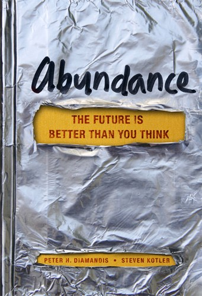

彼得·H·戴曼迪斯（Peter H. Diamandis）是X大奖基金会（X Prize Foundation）的创始人和奇点大学（Singularity University）的联合创始人，史蒂芬·科特勒（Steven Kotler）是科学记者与畅销书作家。两人于2012年合著出版了《富足》（Abundance: The Future Is Better Than You Think），由自由出版社（Free Press）发行。这本书的核心论点直接挑战了弥漫于公共话语中的悲观主义：人类不仅有能力解决当前面临的重大挑战——水资源匮乏、能源短缺、粮食危机、医疗不足和教育落后——而且指数级发展的技术已经将这种可能性从乌托邦幻想转变为可实现的工程目标。
戴曼迪斯和科特勒提出了驱动"富足"的四大力量。第一是指数型技术（Exponential Technologies）：人工智能、机器人技术、3D打印、合成生物学、纳米技术和数字医疗等领域正以摩尔定律式的速度发展，每隔一到两年性能翻倍而成本减半，这意味着曾经只有富国政府才负担得起的能力正迅速变得廉价和普及。第二是"自己动手"的创新者（DIY Innovators）：技术的民主化使得小团队甚至个人也能做出过去需要大型机构才能完成的创新，车库里的创业者可以利用开源工具和云计算资源来解决全球性问题。第三是技术慈善家（Technophilanthropists）：比尔·盖茨、马克·扎克伯格等科技企业家将巨额财富投入全球健康、教育和基础设施，其规模和效率超越了传统慈善和政府援助。第四是"崛起中的十亿人"（The Rising Billion）：随着移动互联网的普及，发展中国家数十亿人口正首次接入全球经济和知识网络，他们既是市场的消费者也是创新的贡献者。
比尔·盖茨（Bill Gates）在本书出版后给予了高度评价，称其为"关于人类未来最令人振奋的书之一"。盖茨本人的慈善实践——通过盖茨基金会在全球疫苗接种、疟疾防治和卫生设施改善方面的投入——正是戴曼迪斯所描述的"技术慈善家"力量的典型代表。书中引用了大量数据来支撑其乐观论断：过去一个世纪中，全球平均寿命从三十一岁增长到近七十岁，极端贫困人口比例从百分之八十以上降至不到百分之十，识字率从百分之二十五上升到超过百分之八十五。这些趋势并非凭空发生，而是技术进步、制度改善与全球协作共同作用的结果。
《富足》并非盲目的技术乐观主义宣言。戴曼迪斯在书中也承认，技术进步伴随着风险——生物技术可能被滥用，人工智能带来伦理挑战，环境退化需要紧急应对。但他的核心论点是，悲观主义本身并不能解决问题，而人类历史上最重大的进步往往发生在多数人认为不可能的时候。对于投资者和企业家而言，这本书提供的不仅是一种世界观，更是一种识别长期趋势的框架：那些能够利用指数型技术解决大规模人类需求的企业和行业，将在未来数十年中创造巨大的经济价值。理解"富足"的逻辑，有助于在短期的悲观叙事中保持对长期增长潜力的判断力。